01
Bolos & tortas
camadas delicadas, festas e pausas merecidas
confeitaria • café • encontros
Uma pausa delicada em Cuiabá, entre cafés, bolos, vitrines e aquele tipo de mesa que faz a conversa durar mais.
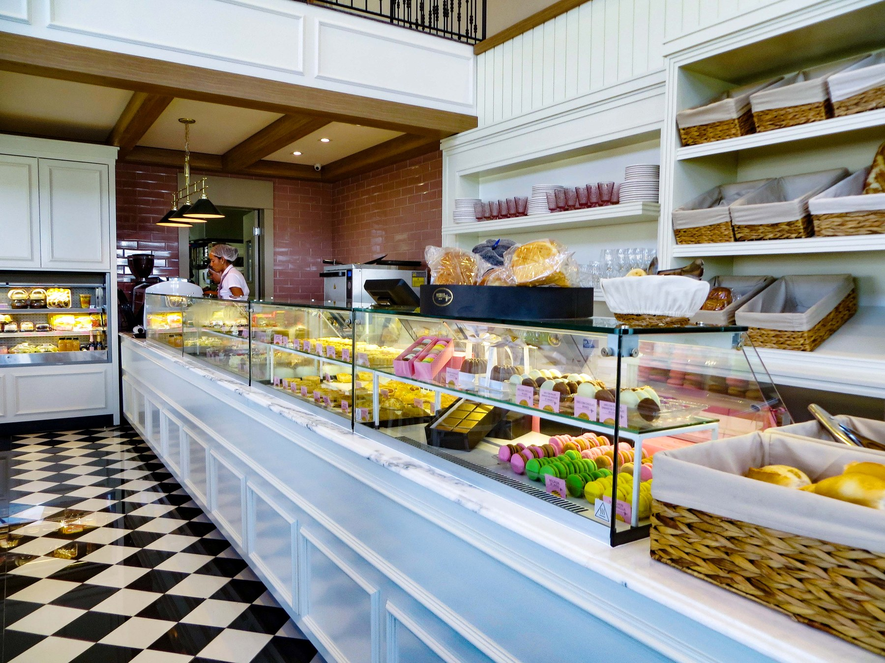
O ambiente clássico da Magrello pede um site com a mesma linguagem: tons quentes, flores, madeira, porcelana e movimento suave. Nada de catálogo sem alma, pq humanidade já inventou planilha demais.
camadas delicadas, festas e pausas merecidas
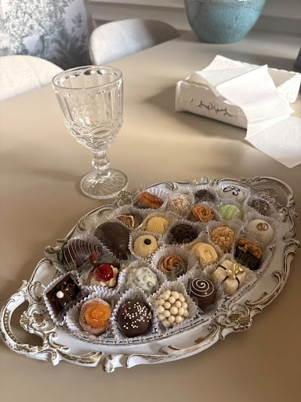
pequenos, bonitos e perigosamente fáceis de repetir
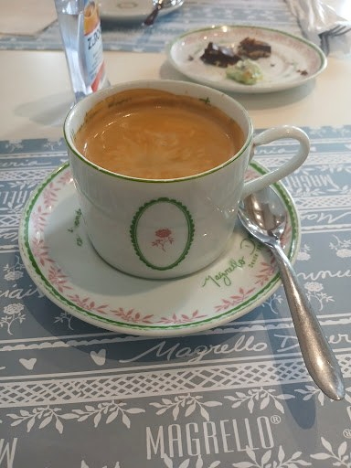
do primeiro gole à conversa que emenda outra
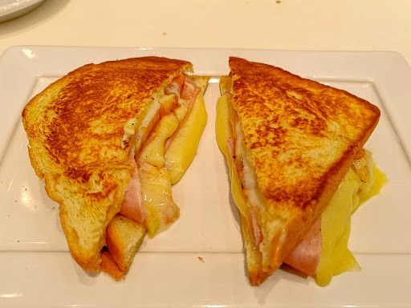
para quando só o doce, tragicamente, não resolve
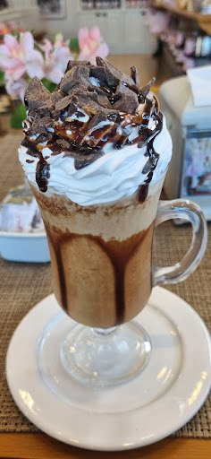
geladas, cremosas e feitas para acompanhar a vitrine
arraste para explorar
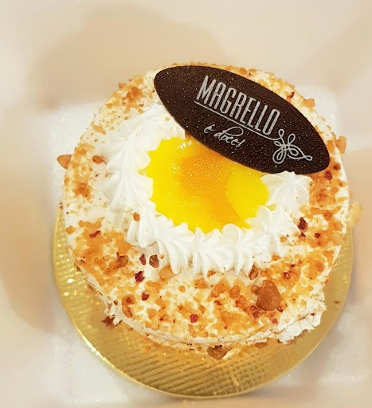
De um café rápido a uma comemoração inteira, a proposta é simples: transformar coisa comum em memória boa. E, aparentemente, colocar flores em volta ajuda bastante.
Clássica, clara e cheia de detalhes em rosa, madeira e porcelana. O tipo de lugar que rende café, foto e “só mais cinco minutinhos” por uns quarenta minutos.
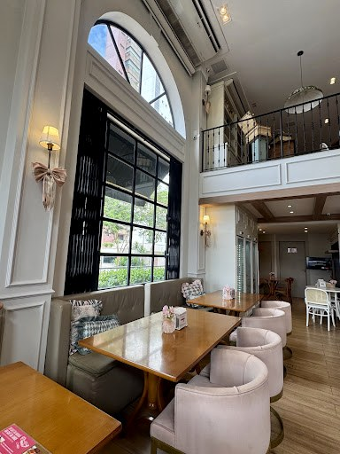
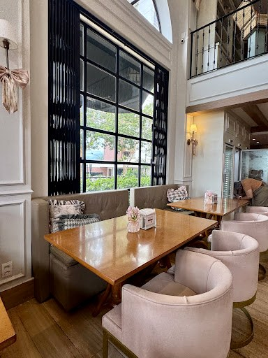
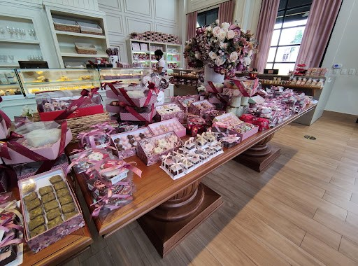
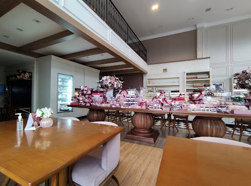
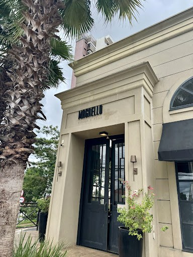
“Sofisticado e aconchegante.”avaliação de cliente no Google